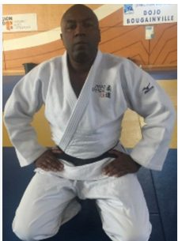
Enseignant
Nicolas Biodore
- Ceinture noire 2e dan
- Diplômé d'État
Professeur diplômé d'État, spécialité éducateur sportif, mention judo ju-jitsu. Il encadre les sections jeunes et adultes aux côtés de Raoul Laï.
Reprise des cours : lundi 7 septembre 2026
Depuis 1970, le Judo Club Cadeneaux O.J.M. enseigne le judo, le ju-jitsu et la self-défense aux Pennes-Mirabeau, sous la direction de Raoul Laï, 6e dan. 136 ceintures noires formées au club, un tatami de 200 m² au dojo des Bouroumettes, et une même exigence du baby judo aux seniors.
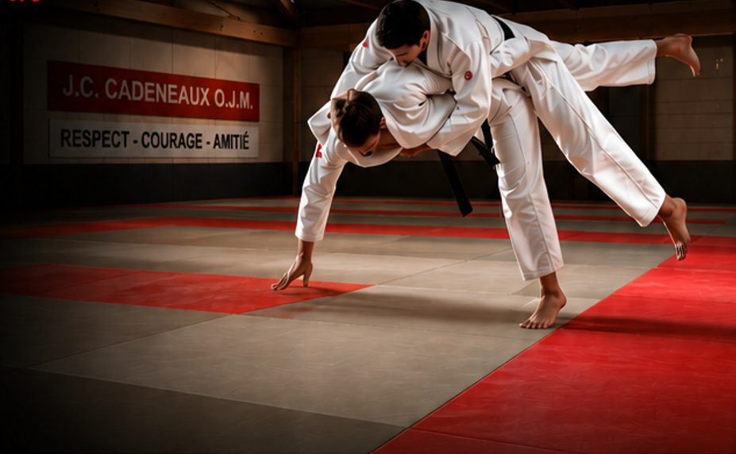
道場 Le club
Le J.C. Cadeneaux O.J.M. a été créé en 1970 aux Pennes-Mirabeau. Depuis plus de cinquante ans, le club transmet les valeurs du judo sous la direction d'un seul professeur, Raoul Laï, 6e dan. Ici, on ne sépare pas le loisir de la performance : le même sensei suit l'enfant qui découvre le tatami en éveil judo et le compétiteur qui prépare son prochain tournoi.
Notre méthode tient en trois principes : des groupes homogènes pour que chacun travaille au bon niveau, une progression technique lisible du blanc à la ceinture noire, et un code moral appliqué au quotidien plutôt qu'affiché au mur.
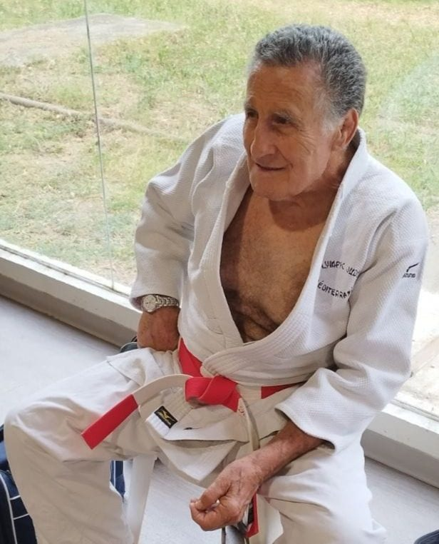
先生 Le sensei
Un club de judo, c'est d'abord un professeur. Aux Cadeneaux, c'est Raoul Laï : ceinture noire 6e dan, professeur diplômé d'État 2e degré, président du club qu'il anime depuis 1970. En plus de cinquante ans, il a formé 136 ceintures noires et accompagné plusieurs générations de judokas avec passion et exigence.
Sa méthode tient en une idée : la rigueur n'est pas l'ennemie du plaisir. On salue en entrant, on écoute en silence, on répète le geste jusqu'à ce qu'il soit juste, et on ne brûle aucune étape. C'est ce cadre qui permet aux enfants de s'amuser en sécurité et aux adultes de progresser vite. Sa pédagogie et son expérience sont les piliers de la réussite du club : les titres de ses élèves, jusqu'au championnat de France, en sont la preuve.
指導 L'équipe enseignante
Deux enseignants formés au club complètent l'encadrement, pour que chaque groupe travaille avec un professeur attentif.

Enseignant
Professeur diplômé d'État, spécialité éducateur sportif, mention judo ju-jitsu. Il encadre les sections jeunes et adultes aux côtés de Raoul Laï.
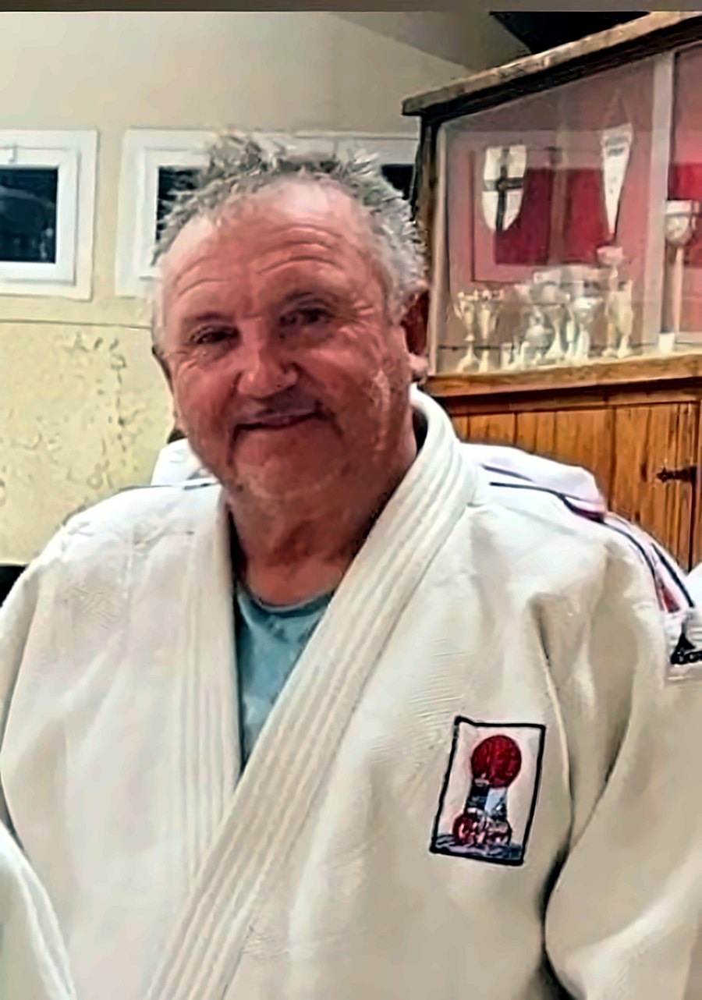
Assistant enseignant
Ceinture noire du club, il seconde les professeurs sur les groupes jeunes et adultes et veille à ce que personne ne reste sans partenaire.
稽古 Nos cours
Sept groupes, un seul état d'esprit. Le passage d'un groupe à l'autre se fait avec le professeur, selon l'âge et la maturité technique.
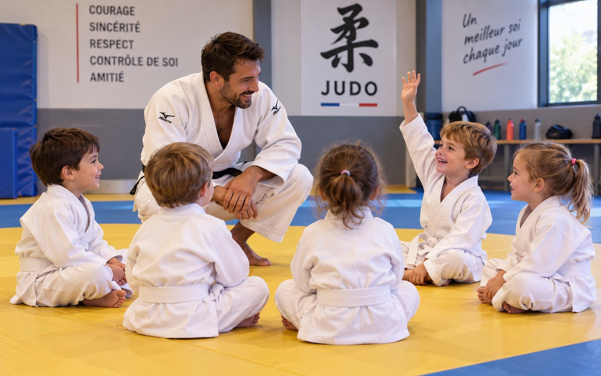
4 - 5 ans目覚め・Mezame
Découverte du judo à travers le jeu : motricité, équilibre, premières chutes et premiers saluts. Une heure ludique pour poser les bases.
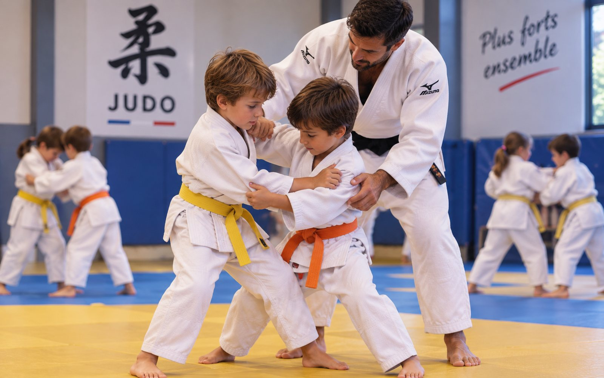
6 - 8 ans柔道教育・Kyōiku
Apprentissage des techniques et des valeurs du judo : chutes, premières projections, travail au sol, code moral et progression par ceintures.
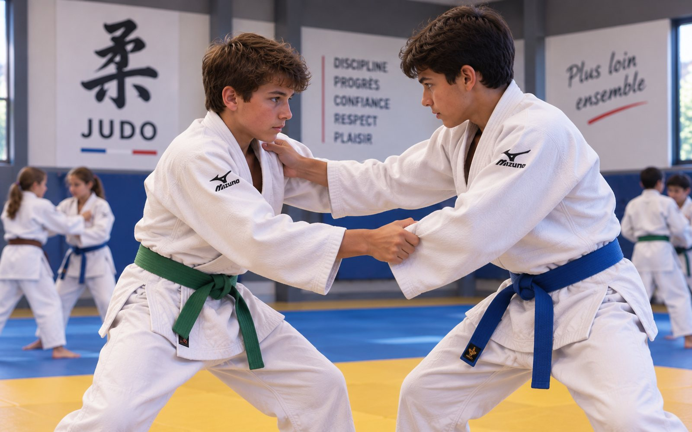
9 - 13 ans試合・Shiai
Perfectionnement technique et préparation aux compétitions. Dès 11 ans, les ados rejoignent aussi le créneau du soir avec les juniors et seniors.
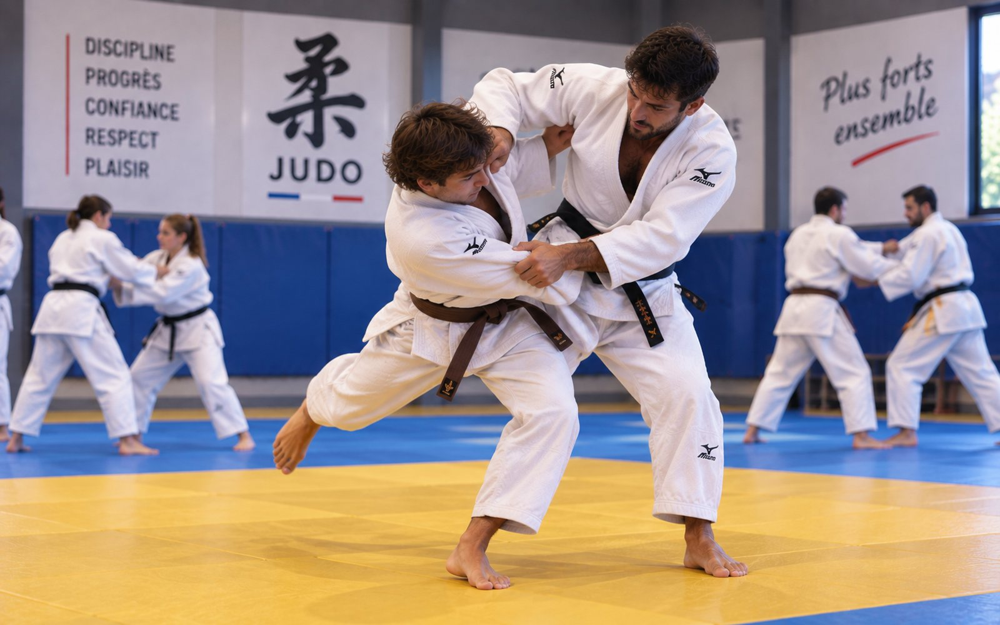
Juniors & seniors乱取り・Randori
Débutants et confirmés, pratique loisir ou sportive. Technique, randori et préparation physique, avec les ados de 11 à 13 ans.
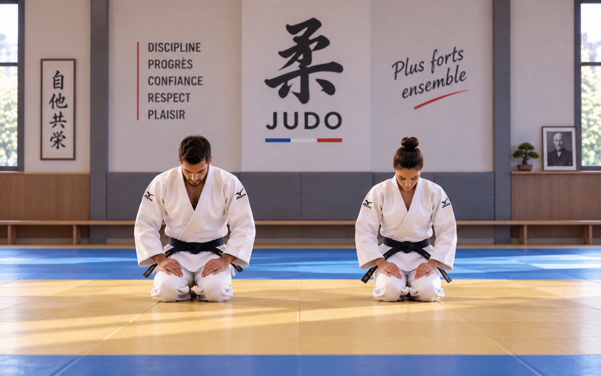
Tous niveaux形・Kata
Le travail de fond du judoka : répétition des techniques, katas et préparation des passages de grades jusqu'à la ceinture noire et au-delà.
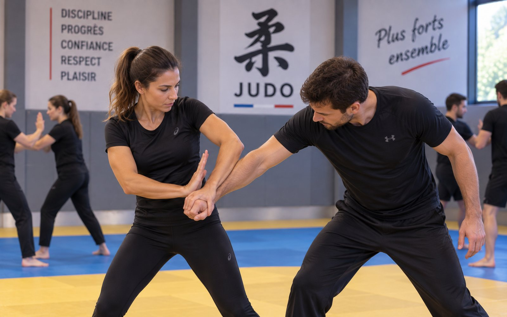
Adultes護身術・Goshin-jutsu
Pratiques tournées vers la défense physique de soi : dégagements sur saisies, atémis, projections et contrôles, avec préparation physique.
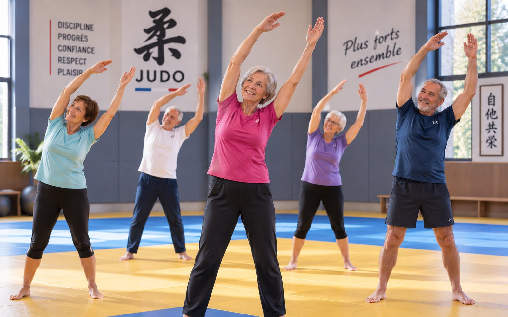
Seniors体操・Taisō
Activités sollicitant la mobilité, la motricité et la coordination, sans chute ni combat. Pour rester en forme dans l'esprit du dojo.
入門・Nyūmon
Quel que soit le groupe, venez essayer une séance sans engagement. Un survêtement et une bouteille d'eau suffisent.
Réserver mon essaiPhotos d'illustration. Les cours, horaires et encadrants décrits sont ceux du club.
Quel cours pour mon enfant ?
Indiquez l'année de naissance du futur judoka. Nous vous donnons sa catégorie fédérale, sa section au club et ses horaires.
時間 Planning
Cinq soirs par semaine au dojo des Bouroumettes. Filtrez par section pour trouver votre créneau.
Reprise des cours le lundi 7 septembre 2026. Planning valable hors vacances scolaires et jours fériés (zone B). Gym seniors : horaires sur demande. Un doute sur la section ? Utilisez le sélecteur ou appelez-nous.
道場 Le dojo
Le club s'entraîne au dojo du complexe sportif municipal des Bouroumettes, aux Cadeneaux. Un tatami fixe de 200 m², des vestiaires, un parking sur place : des conditions idéales pour l'éveil judo comme pour le groupe compétition.
L'enseigne du dojo, au-dessus du tatami, résume ce qui s'y enseigne.
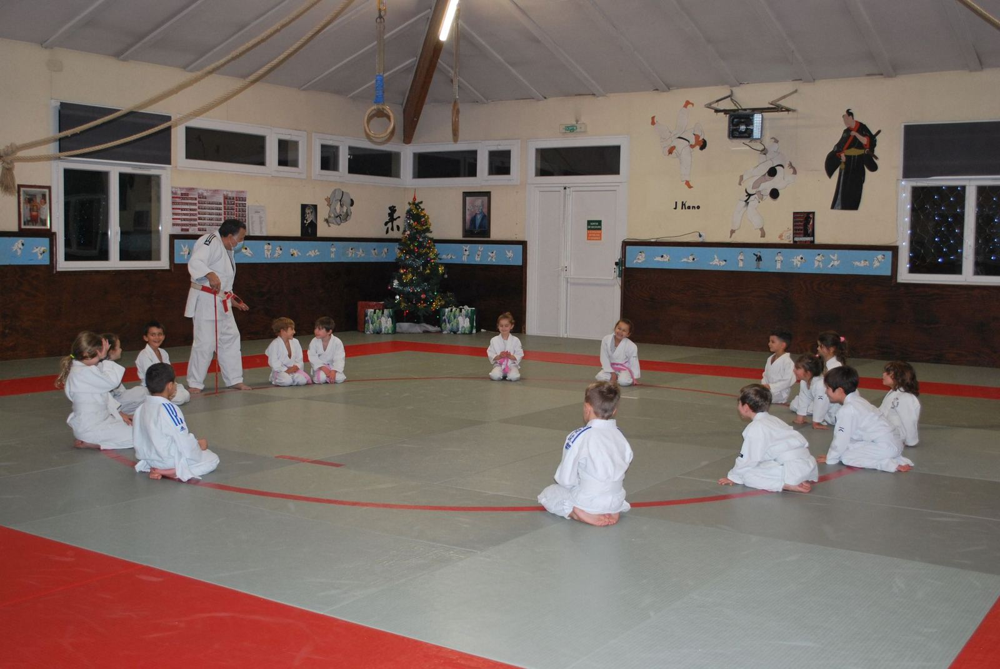
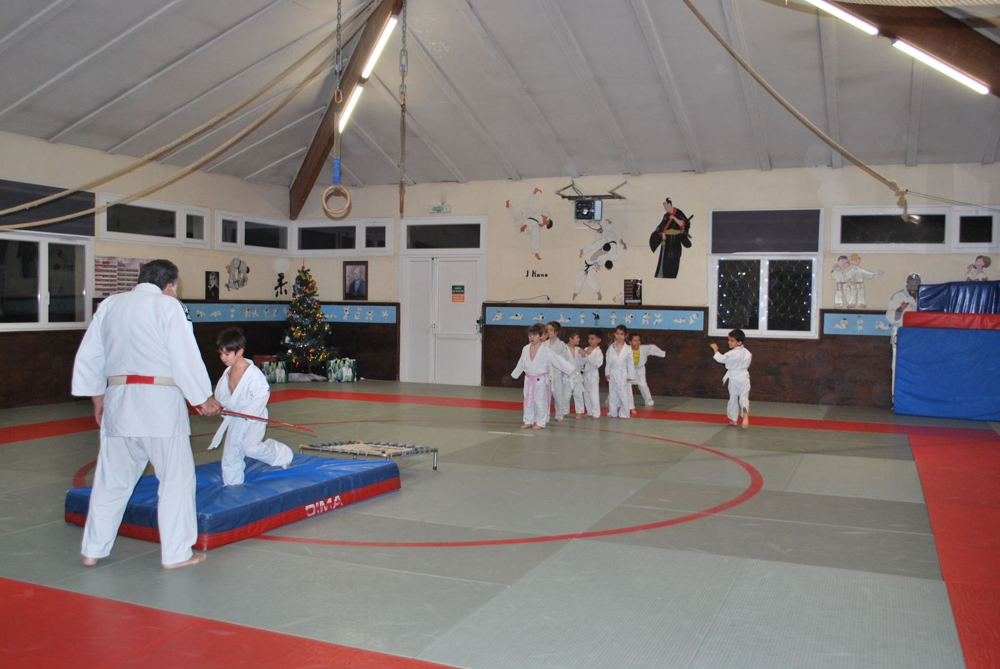
会費 Tarifs
Adhésion annuelle, licence et assurance fédérale comprises. Paiement possible en trois fois, sans frais.
4 - 5 ans · 1 séance / semaine
180€
pour la saison complète
6 - 13 ans · 2 séances / semaine et plus
230€
pour la saison complète
Judo, katas, self-défense, gym seniors
250€
pour la saison complète
À partir du deuxième licencié d'un même foyer, une remise est appliquée sur chaque cotisation supplémentaire.
Le club accepte le Pass'Sport, les coupons sport ANCV et les aides des comités d'entreprise, déduits directement de la cotisation.
Le premier cours est gratuit. La cotisation n'est demandée qu'une fois la décision prise, après la séance d'essai.
精力善用 Pourquoi le judo
Le judo est un sport complet, mais c'est d'abord une école. Voici ce que nos judokas en retirent, saison après saison.
Les chutes, ukemi, sont la première chose enseignée. Un réflexe protecteur qui sert toute la vie, du vélo au verglas.
On salue le partenaire, le professeur et le tatami. Le cadre est ritualisé, clair, et les enfants s'y sentent en sécurité.
Chaque ceinture valide un ensemble de techniques et un comportement. L'effort produit un résultat visible, à hauteur d'enfant.
Déplacements, déséquilibres, travail au sol : le judo développe une motricité fine et une conscience du corps précieuse.
On apprend à doser sa force sur un partenaire que l'on doit protéger. La confiance vient de la maîtrise, pas de la domination.
Le partenaire d'entraînement d'aujourd'hui est souvent l'ami de toute une scolarité. Le dojo est aussi un lieu de vie.
道徳 Le code moral du judo
Le code moral est enseigné dès l'éveil judo et rappelé à chaque cours. Au club, il se vit sur le tatami avant de se lire au mur.
C'est le respect d'autrui.
C'est faire ce qui est juste.
C'est s'exprimer sans déguiser sa pensée.
C'est être fidèle à la parole donnée.
C'est parler de soi-même sans orgueil.
Sans respect, aucune confiance ne peut naître.
C'est savoir se taire lorsque monte la colère.
C'est le plus pur des sentiments humains.
礼式 Reishiki, l'étiquette du dojo
Ces règles ne sont pas des contraintes : elles sont le judo lui-même. Elles s'apprennent en une séance et se gardent toute la vie.
帯 La progression des ceintures
Chez les enfants, des ceintures intermédiaires à deux couleurs marquent chaque étape. Au-delà de la noire, les dan se comptent de 1 à 10 : le 6e dan du professeur correspond à une vie de pratique.
柔道着 S'équiper
Le judo demande très peu de matériel. Pour le cours d'essai, un survêtement et un tee-shirt suffisent. Une fois inscrit, le judoka s'équipe d'un judogi (kimono) blanc, d'une ceinture et d'une paire de zooris pour se déplacer entre les vestiaires et le tatami.
柔よく剛を制す
« La souplesse triomphe de la force. »
Principe fondateur du judo — Jigorō Kanō
便り Actualités
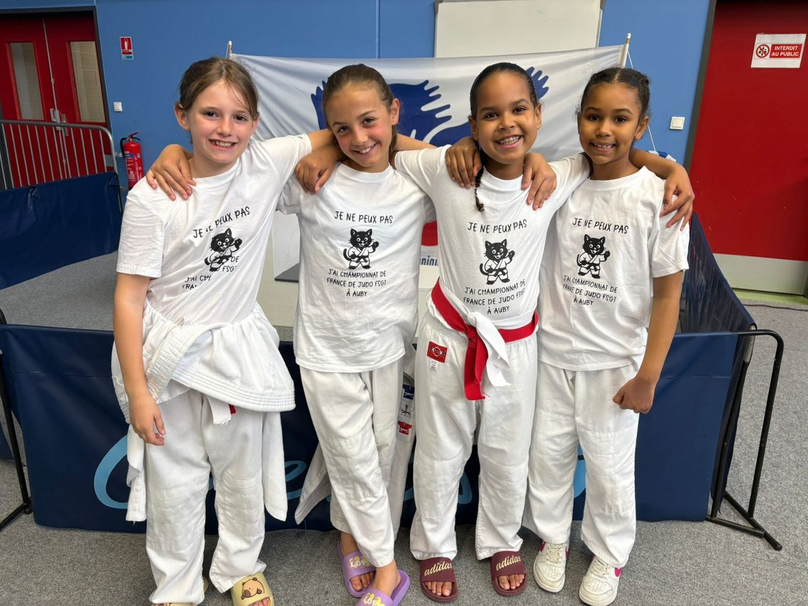
Compétition · 4, 5 et 6 avril 2026
Raphaël, Thomas, Marlon et Yeleen ont représenté le club au championnat de France de la Fédération Sportive et Gymnique du Travail, dans le Nord. Thomas, 10 ans, en revient champion de France poussins (moins de 42 kg).
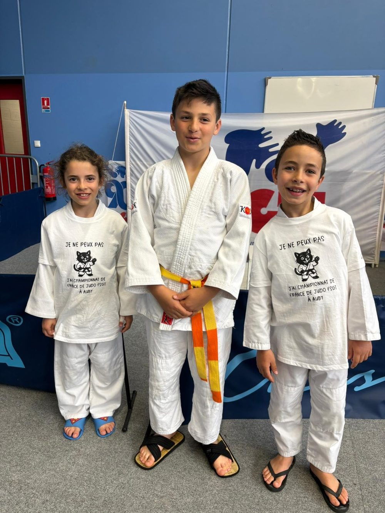
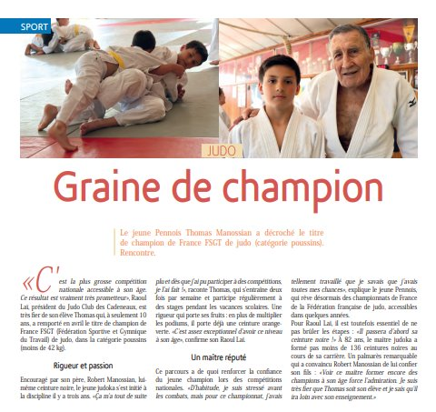
Presse locale
Le magazine de la ville consacre une page au jeune champion et à son maître. « C'est la plus grosse compétition nationale accessible à son âge. Ce résultat est vraiment très prometteur », confie Raoul Laï, qui tient à ne brûler aucune étape : « Il passera d'abord sa ceinture noire ! »
Rentrée 2026/2027
Le tatami des Bouroumettes rouvre pour la saison. Les inscriptions se font au dojo, avant ou après les cours, et le premier cours est offert.
S'inscrire入門 Inscription
Trois étapes, sans paperasse inutile. On commence toujours par un cours d'essai.
Envoyez le formulaire ou appelez le club. Nous vous indiquons le créneau adapté à l'âge et au niveau.
Un survêtement, un tee-shirt, une bouteille d'eau : c'est tout. Le judogi n'est nécessaire qu'après l'inscription.
Fiche d'inscription, justificatifs de santé et cotisation. La licence fédérale est ensuite créée par le club.
Les pièces médicales exigées évoluent avec la réglementation sportive. Le club vous confirme la liste exacte au moment de l'inscription.
質問 Questions fréquentes
Dès 4 ans, avec le baby judo du mercredi. Le format est court et ludique : motricité, équilibre, jeux d'opposition et premières chutes. À partir de 6 ans, l'enfant rejoint la section enfants, puis la section ados à 9 ans.
Oui, et sans engagement. Prévenez-nous simplement avant de venir pour que Raoul Laï vous attende et place votre enfant dans le bon groupe.
Non. Un survêtement et un tee-shirt suffisent pour les premières séances. Le professeur vous conseillera ensuite sur la taille et le grammage du judogi.
C'est même l'une des raisons de venir. Le cadre est ritualisé, le professeur nomme chaque étape, et la progression par ceintures donne des repères concrets. Beaucoup d'enfants réservés y gagnent en assurance dès la première saison.
Jamais. La pratique loisir ou sportive est un choix. Ceux qui veulent concourir sont préparés et accompagnés, jusqu'au championnat de France FSGT pour les plus motivés.
Oui. Les débutants adultes sont accueillis le lundi et le jeudi à 19h30, avec un travail adapté sur les chutes avant tout autre apprentissage. Le cours de self-défense du mardi est une bonne porte d'entrée, et la gym seniors s'adresse à ceux qui veulent bouger sans combattre. Lire notre guide pour adultes débutants.
C'est possible tant qu'il reste de la place dans le groupe. La cotisation est alors calculée au prorata des mois restants.
Le complexe sportif des Bouroumettes se trouve aux Cadeneaux, à quelques minutes de Plan de Campagne et des quartiers nord de Marseille. Un parking est disponible sur place.
連絡 Contact
Une question sur un créneau, un tarif ou une inscription ? Ce formulaire arrive directement au bureau du club.
Ouvrir dans OpenStreetMap Venez nous voir : itinéraire Google Maps
Venez essayer une séance, sans engagement et sans matériel. Le reste suivra naturellement.